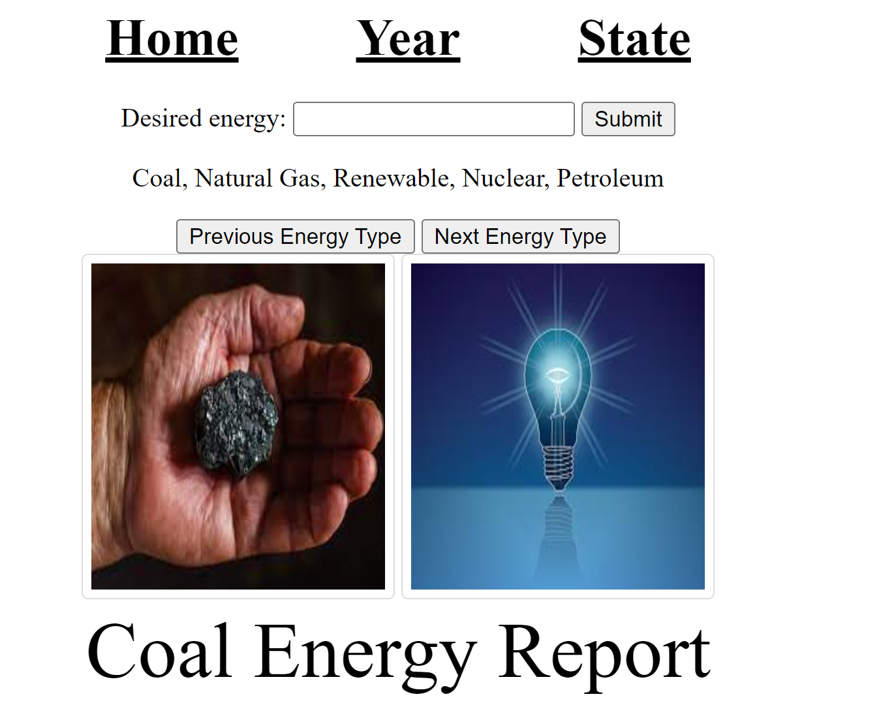
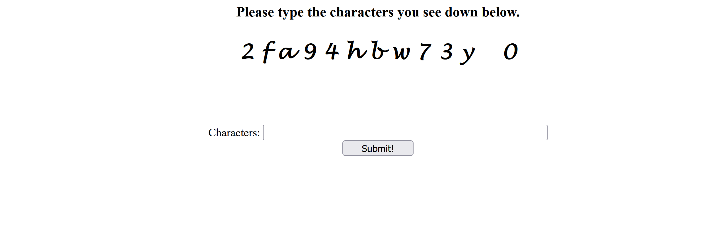
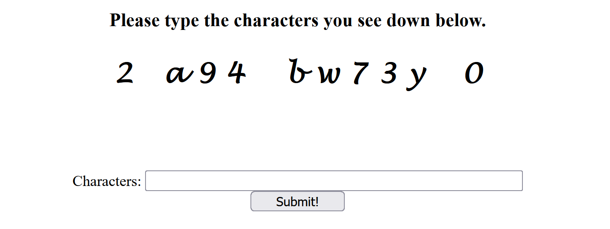
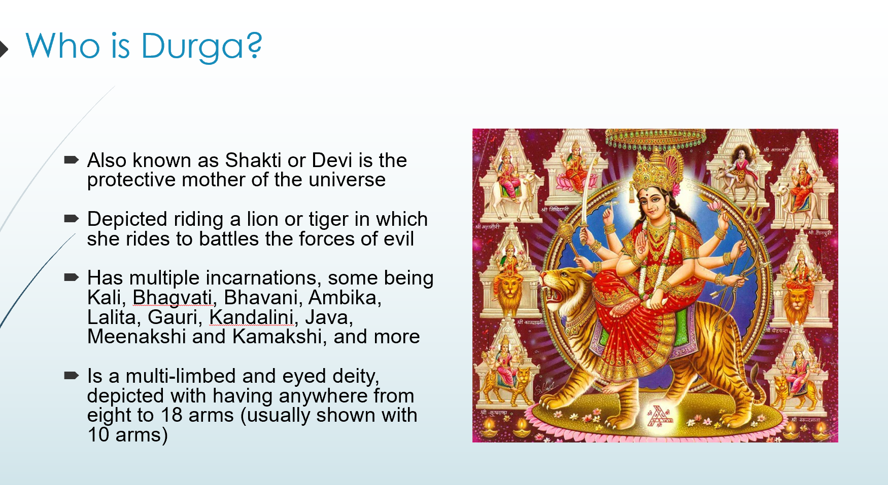
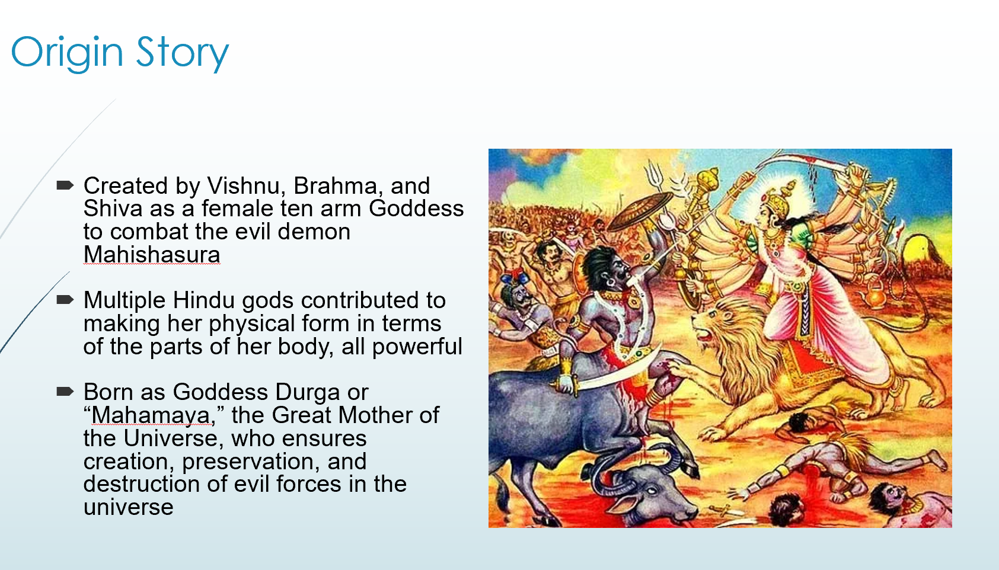

Energy Consumption (Web Dev)
This Project was the first one in WebDev where we used templates to show
different sets of data from the database using html and JavaScript. The objective
was to analyze the Energy Consumption data from the given database through a server
and display the data through a graph and a table. Users may select to oragnize
the data of a specific year, state, or type of energy.
To view one of the templates (energy) used:
click here
OR
To view a sample of the GET request used to call the template:
click here

Cache Captcha (Info Sec)
In this Project, we had to use the history cache to attempt to
track what sites people have visited for viewing majors and make recommendations
on what they have not visited. This was the captcha I made which had a certain set values that
always showed and some which "appeared" dependent on what links you have visited.
The files have both Html and Python coding in them.
To view the html file used:
click here
OR
To view the PhP file:
click here


Durga Presentation (World Religions)
In this Project, we research about Hindu gods which I have not known my entire life.
My group researched Durga, who is seen as a protective mother of the universe.
This project relates to the capstone project in a couple ways. Communication
is important especially when creating something (or presenting something) that
you haven't really done (or known about) before. It helps us keep track of who does what
and organizing data and information. The second thing is that making sure you research things
properly and double check that the source is both accurate and valid for use.
To view the presentation slides:
click here
OR
To view the PhP file:
click here

